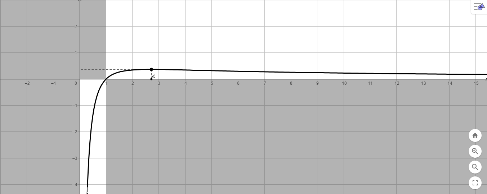

Soluzione:
Dominio: \(\,\,D = (0\,,\,\,+\infty)\)
Segno:
La funzione
-
assume valore positivo se \(x \in (1\,,\,\,+\infty)\),
-
assume valore negativo se \(x \in (0\,,\,\,1)\),
-
vale zero se \(x = 1\).
Comportamento in prossimità degli estremi del dominio - ricerca asintoti:
Si ha
\[
\lim_{x \to 0^{+}} f(x) = -\infty \quad \lim_{x \to +\infty} f(x) = 0
\]
quindi l'asse \(x\) e l'asse \(y\) sono asintoti per il grafico della funzione.
Continuità
La funzione è continua nel suo dominio.
Derivabilità
La derivata della funzione
\[
f'(x) = \dfrac{1 - ln(x)}{x^2}
\]
La funzione è derivabile in tutto il dominio \(D\).
Studio intervalli di monotonia: La funzione è
-
crescente nell'intervallo \((0\,,\,\,e)\)
-
decrescente nell'intervallo \((e\,,\,\,+\infty)\)
-
stazionaria in \(x = e\).
Grafico:
